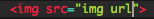
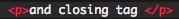

Well getting the navigation bar to look as it does have more than one step. For starters, the navigation bar has seven different links that redirect the user to another page. Behind the website, the lines of code need to make these needed to have been in a unordered list (ul). Following that, the link( a href) that the user will be redirected to needs to "uploaded" into the text. In this case, since the redirected site hasn't been made yet, the page will be blank until made. The link is followed by heading tags (h4) that will effect the size of the text which can be anything; for this case it is: hardware, tutorial, etc.
All the decritption of the above link is being written in HTML, which just plainly displays the text and link. But to make it look presentable, CSS needs to implemented to give it the nice black bar that surrounds. Since CSS and HTML are two seperate languages, there needs to be a connection between them. The CSS that makes this bar is this links my seperate shell that runs on CSS to my HTML shell, giving the black bar. But to make the black bar implementable, it needs to be created first. It is the small details/description codes are making the color of the bar black. And since I wanted the bar to reach from both ends of the the margin needs to be 0 px; adding a higher pixel value will add a limitation to the border.
For completing the "About me" page, desribing yourself it actually all you needed to do to create one. But going behind the scene of the webpage, adding an image would be best way to go to inform about yourself. If you're lucky enough to find an image on Google about yourself, adding a line of code of  would insert the image that you copied the image url from. Resizing it would consit of "height" and "width" measurments with measuring units of "px" or "%". For adding simple information, adding text with the line of codes of  Using small details, like the instagram and facebook icon on the far right, would help make the webpage more proffessional and give it a clean finish. After having added the image, moving it to the right would be the next step to keep it from interfering with the rest of my stuff. In this case, a line of code place ontop of the two image line of codes is Using these lines of code built the majority of my page. The navbar came from CSS and some HTML that is found above.
A little side note on what it truely takes to make your own website is persistence and being ok to fail. To understand what is going around your lines of code is paying attention to detail. There will be small notifications that will pop-up when an error is made in a line of code. Keeping an eye on that will help write working code and in not time, will you have created something from scratch :)